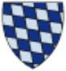

Greve av Bayern, Greve av Wittelsbach. Blev ca 59 år.
omkring 1130 Kelheim, Nederbayern, Tyskland. [1]
1189 Pfullendorf, Bayern, Tyskland. [1]
Otto IV, greve till Wittelsbach (även känd som Otto V av Scheyern), född omkring 1083, död 4 augusti 1156, var "greve till Wittelsbach" 1116-1156. [5]
Han var en ättling till greve Otto II av Scheyern och Richgard av Weimar-Istrien. Otto titulerade sig som "greve till Wittelsbach" efter Wittelsbachs slott utanför Aichach från 1116 och framåt. Han tjänade under den tysk-romerske kejsaren Henrik V och var pfalzgreve av Bayern från 1120.
Otto IV fick två söner tillsammans med sin hustru Heilika av Lengenfeld-Pettendorf. Dessa var Otto I, den förste hertigen av Bayern från ätten Wittelsbach och Konrad av Wittelsbach, ärkebiskop av Mainz och Salzburg.